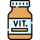
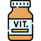
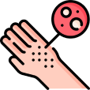
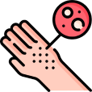
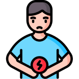
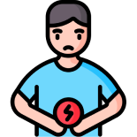
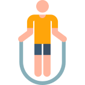
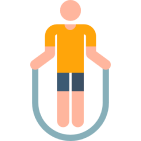

A cultura de cuidados individuais integrativos reduz gastos para a empresa e leva mais conforto ao paciente.

Jornada da Saúde

Jornada Otimize

Jornada Performance
Métodos utilizados
Pesquisa científica sob demanda
Profissionais da saúde Integrativos
Benefícios para Profissionais e Pacientes
SAAAS (Software as a Service)
TAAS (Talent as a Service)
Curadoria para atendimentos e eventos
Metodologia

 

 

 

 

Para Quem
Sobre
50%
Da população desconhecem que possui doenças crônicas (MS).
50%
Dos pacientes com doenças crônicas não aderem ao seu tratamento (ANS).
6%
Do PIB global das empresas é de despesas com assistência médica e seguro (OIT).
27%
Dos custos e absentismo podem ser reduzidos com iniciativas de saúde no trabalho (WHO).
A vivência que me trouxe até aqui
-
Foram 5 meses até descobrir o tumor, raro e grave (já estava do tamanho de uma laranja).
-
Diversos profissionais diagnosticavam doenças diferentes e equivocadas (negligência).
Nada era investigativo o suficiente.
-
Isso resultou em uma cirurgia urgente quando descobrimos, um custo elevadíssimo e carência.
-
Na época, perdi todos os movimentos, uma série de sequelas que vão ficar pelo resto da vida.